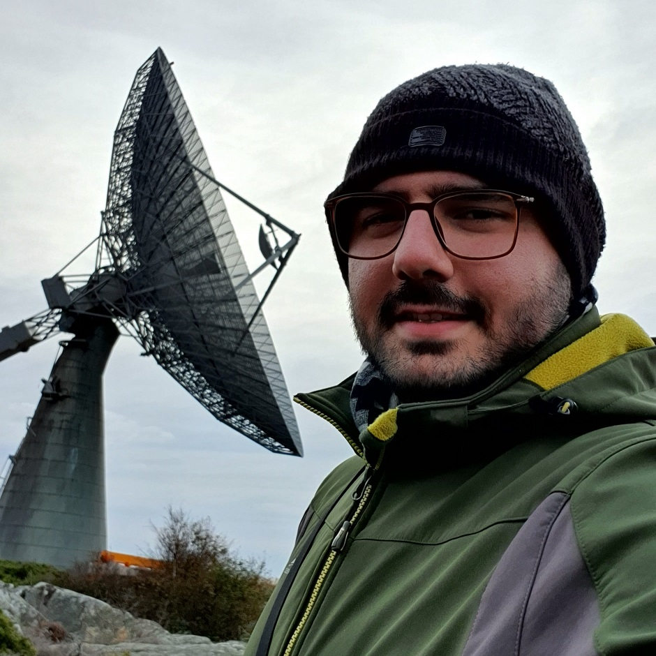

Current Research
Three-dimensional dust and gas distributions in the Milky Way, molecular-cloud density statistics, turbulence, and star formation.
PhD Student · Interstellar Medium & Molecular Clouds
Exploring the three-dimensional distribution of dust and gas in the Milky Way to understand the structure and physics of molecular clouds and star formation.
Astronomy & Plasma Division · Department of Physics and Astronomy
Chalmers University of Technology · Onsala Space Observatory

I study the interstellar medium (ISM) in the Milky Way, particularly focusing on the distribution of dust and gas, turbulence, extinction, and the structure of molecular clouds.
I utilize and analyze Gaia-based 3D dust-extinction maps to derive density probability distributions (PDFs) and compare 3D and 2D statistics to study nearby molecular clouds in the solar neighborhood. Our goal is to use these spatial 3D dust maps to better understand the physics of molecular clouds and how stars form within them.
Beyond research, I am deeply passionate about outreach and public science. I find meaning in curiosity through science, and creativity through arts like photography, music, and graphic design.
I often intertwine these with my fascination for astronomy, exploring both its visual and emotional dimensions. I am also drawn to philosophy, evolution, and history, finding quiet connections in the subtle patterns that shape how we understand the universe.
Three-dimensional dust and gas distributions in the Milky Way, molecular-cloud density statistics, turbulence, and star formation.
Chalmers University of Technology, Sweden. Astronomy & Plasma Division.
MSc in Gravity & Cosmology,
Shahid Beheshti University, Tehran.
BSc in Astrophysics,
Azad University of Varamin-Pishva.
Stellar Origins 2025 · University of Vienna
Conference posters ↗IAU-IHOW Radio Astronomy Workshop
Workshop ↗MW-Gaia Workshop 2021 · EAS 2021 Meeting
Workshop ↗IPM Spring Conference Proceedings · pp. 31–35
Proceedings ↗Journal on Occultation and Eclipse (4) · pp. 11–18
Publication ↗Journal on Occultation and Eclipse (3) · pp. 24–28
Publication ↗Astronomy & Plasma · Chalmers University of Technology, Sweden
Astronomy & Plasma · Chalmers University of Technology, Sweden
Chalmers University of Technology & Onsala Space Observatory, Sweden
Institute for Research in Fundamental Sciences (IPM), Iran
Physics Department · Shahid Beheshti University, Iran
For research collaborations, academic inquiries, science outreach, or other professional conversations.